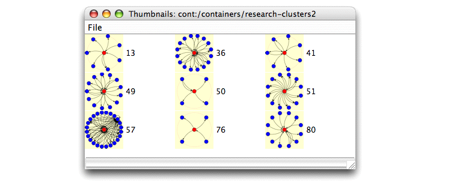

The previous query matched individual elements in the database. To match groups of elements we use numeric annotations. A numeric annotation groups together repeated isomorphic substructures that would otherwise create multiple matches for the query. Annotations can also be used to place limits on the number of substructures that can occur in matching portions of the database.
The following exercise finds, for each research project object (web page) in the database, all objects directly linked to that page. It uses a numeric annotation to group matching database entities into a single matching subgraph.
This query illustrates one of the most common query forms, the one-dimensional star or 1d-star query. A 1d-star is the cluster of objects directly linked to a central, core object. Star queries can use QGraph features such as conditions and constraints to restrict matches to objects with specific attribute values.
Exercise 5.3. Creating a query with numeric annotations:
The query created in this exercise is also available in the
Proximity 4.3 distribution in
$PROX_HOME/doc/user/tutorial/examples/research-clusters2.qg2.xml.
Before beginning, make sure that you are serving the ProxWebKB database using Mserver. Start the Proximity Database Browser if it is not already running.
-
Open the research-clusters1 query that you created in Exercise 5.1:
-
From the Query menu, choose Edit Query.
-
Navigate to the location where you saved the query created in Exercise 5.1. (If you saved the query using the suggested directory and file name, this is
$PROX_HOME/doc/user/tutorial/examples/rc1.qg2.xml.) -
Click OK.
So that you do not overwrite the existing query, save this new query as
rc2.qg2.xml. -
-
Select the linked_page vertex. Double-click in the Value column of the Annotation property. Enter
[1..]and press Tab. -
Check the status list at the bottom of the Query Editor. Notice that the query is now invalid. Click the arrows at the right edge of the status list to see the specific errors.
An edge next to an annotated vertex must itself be annotated. To fix the error, select the linked_to edge, enter
[1..]for the edge’s annotation, and press Tab.You can optionally set the Query Editor to automatically add a
[1..]annotation to every new edge. The[1..]edge annotation groups multiple links connecting the same two objects, which is typically the intended behavior for most Proximity queries. To automatically add a[1..]annotation to new edges, choose Add [1..] To New Edges from the Query Editor’s Edit menu. You can edit an individual edge annotation later if you determine that a different annotation is more appropriate. -
Update the name and description of the query. Instead of finding individual linked pages, the new query finds clusters of pages connected to research project pages.
-
Make sure the query is valid by checking the status list at the bottom of the Query Editor window. If the query is not valid, examine the errors in the list and fix any problems before saving.
-
[Optional] Update the name and description for the query.
-
From the File menu, choose Save or press Ctrl-S to save the changes to your query.
-
From the File menu, choose Run or press Ctrl-R to execute your query. Proximity prompts you for a name for the results container. Enter
research-clusters2and click OK.Proximity opens a window to show you a trace of the query execution. The last lines should be similar to the following excerpt (leading information showing elapsed time and execution thread has been omitted from the trace for brevity):
INFO kdl.prox.qgraph2.QueryGraph2CompOp - -> found 83 subgraphs INFO kdl.prox.qgraph2.QueryGraph2CompOp - -> query results saved in container: research-clusters2 INFO kdl.prox.qgraph2.QueryGraph2CompOp - * query: done Status: finished running query
Close this window after the query finishes.
-
If needed, move or close the Query Editor window so that you can see the Proximity Database Browser. In the Proximity Database Browser start page, click Containers to display the list of containers in the database.
-
Click research-clusters2 to display the list of subgraphs in this container. You can see that there are far fewer subgraphs in this container than there were in the research-clusters1 container.
-
Click thumbs to display thumbnail images for a set of randomly selected subgraphs. Because the thumbnails are selected at random, you may see a different set of subgraphs than those shown below.
 Unlike the subgraphs in the research-clusters1 container, these subgraphs vary in the number of linked_page objects linked to each start_page objects. And in some of the subgraphs, some of the linked_page objects are connected to the start_page object by two or more links. The
[1..]annotation on the linked_page vertex groups the matching objects and the[1..]annotation on the linked_to edge groups the corresponding links. -
Click 0 to see the contents of subgraph 0. Notice that we still have a single start page, object 398 (you may need to scroll down to see the start_page object), but the subgraph now includes many linked pages. Click graph to display the graph of this subgraph.

![[Caution]](images/caution.png)
Using numeric annotations successfully collapses the multiple subgraphs for each research page into a single subgraph that includes all the linked pages.